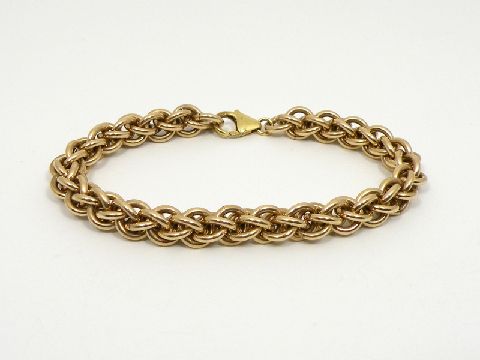
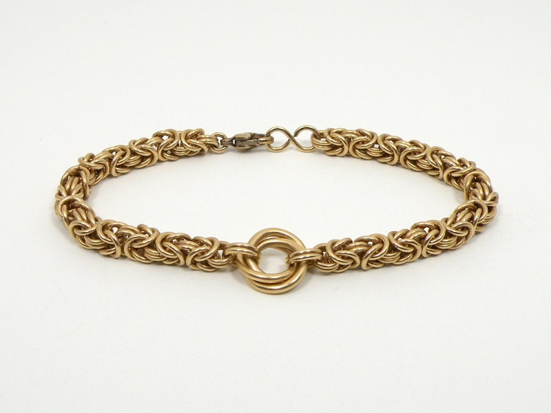
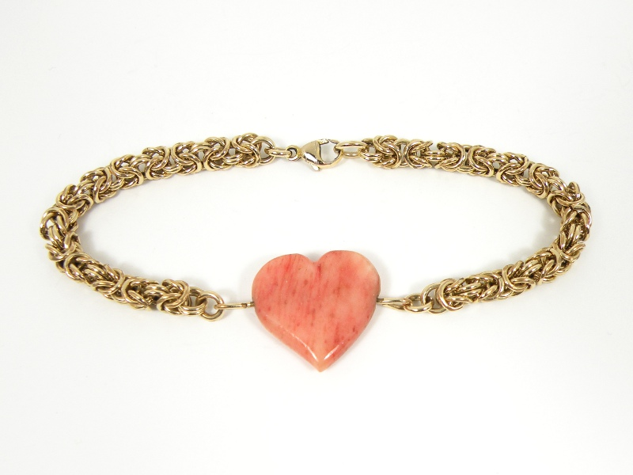

Chainmaille Bracelets - Gold Chainmaille Bracelets - Gold
Chainmaille Bracelets - Gold Chainmaille Bracelets - GoldHaving mastered the various skills required to make chain jewelry using cheap or free basemetals, I feel confident enough now to buy more valuable wire for finer pieces. While solid gold is prohibitively expensive these days, gold-filled wire is affordable (though still not cheap) and serves just as well.
The bracelets above and below are made using 12k 1/20 gold-filled wire. This means that 1/20 of the total weight of the wire is 12 karat gold. Unlike gold plating, gold-filled items are manufactured mechanically; a thin layer of gold is bonded to a basemetal (usually brass) using pressure and heat. The result is hundreds or thousands of times thicker than gold plating and will last much longer. Gold pocket watches are usually made with gold-filled cases and were once rated by how long the watch could withstand the constant insertion into and removal from a pocket before the gold layer wore through. Twenty-year watches were common. 
I purchased mass-produced clasps for these bracelets, at the request of the persons for whom they were made. While I prefer my hand-made clasps, some people find them more difficult to manipluate single-handedly. Also, gold-filled wire limits me somewhat as to latch design; any sanding or heavy buffing will expose the base-metal.
I prefer the clean, unencumbered look of a metal chain, but I will occasionally add an accent piece of another material. I made the above bracelet for my girlfriend using 20 gauge wire, with a heart carved of giraffe bone as the centerpiece. The heart was dyed red, orginially quite strikingly, however the color has faded to pink over several years. It is free to spin on its horizontal axis, allowing either side to be displayed.
Created by Sean Corron, April 2, 2011.